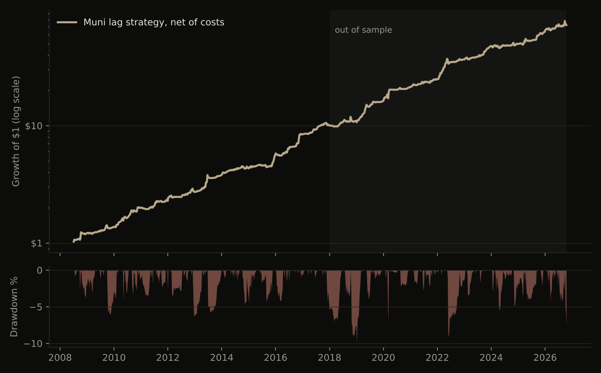

Muni ETFs price Treasury moves with a two-to-four-day lag
MUB and VTEB absorb about 70% of a Treasury move on the day and the remainder over the following two to four sessions. The strategy trades that residual: long the muni ETF against beta-weighted IEF after Treasury rallies, the reverse after selloffs, entered at the next open.
1.93Sharpe ratio, 2018-26 out of sample, net of costs
2.01Sharpe ratio, 2008-26
-10.0%Maximum drawdown at 10% target volatility
19 / 19Positive calendar years, 2008-26
Average cumulative move in each muni ETF after a one-standard-deviation daily move in IEF, 2008-2026.
Mechanism
Most municipal bonds trade a few times a month. Fund NAVs and ETF fair values are built from vendor evaluated prices, which update from sparse trades and Treasury-curve models with a lag. Muni ETF market makers quote around those values, so a Treasury move is only partly reflected in the ETF on the day. The holder base, mainly tax-motivated retail and mutual funds, is slow to rebalance, which also makes fund flows persistent.
Top: the pricing chain that creates the lag. Bottom: how the strategy positions for it.
Treasuries reprice. IEF moves on macro news.
Muni ETF quotes anchor to vendor evaluated prices.
Same day: about 70% of the eventual move is priced (MUB 73%, VTEB 65%).
Days 1-4: marks catch up as sparse muni trades print. This is the P&L source.
Strategy: measure the Treasury move at the close, take a hedged position in MUB and VTEB against IEF, execute at the next open and hold through the catch-up.
Measured lag
ETF
Beta to IEF, 1 day
Beta to IEF, 10 days
Priced on day one
Corr. of IEF today with hedged ETF tomorrow
MUB
0.30
0.41
73%
0.11
VTEB
0.35
0.54
65%
0.17
Daily data, 2008-2026 (VTEB from 2015).
Signal construction
Treasury catch-up (main input). Exponentially weighted IEF return over the last few sessions, scaled by its trailing volatility.
Equity catch-up. The same measure on SPY at 0.3 weight; credit and risk sentiment also reach munis late.
Flow persistence. 60-day momentum in the hedged muni return at 0.5 weight; muni fund flows trend.
Reinvestment calendar. A 0.5 long tilt over the first five business days of each month, when coupon and redemption cash is reinvested.
Execution. Signal at the close, trade at the next open. Each ETF is hedged with IEF at its rolling one-year beta. Costs of 1bp per side on the muni ETF and 0.5bp on IEF. A no-trade band limits turnover to about 60 position units a year.
The specification was selected from 32 variants on 2008-2017 data only. Across all 32, the median 2018-2026 Sharpe ratio is 1.73.
Performance
Weekly returns, net of costs, scaled to a 10% volatility target using trailing data. 2008-2017 was used for design; 2018-2026 is out of sample.
2008-17
2018-26 (out of sample)
2008-26
Annual return, excess of cash
27.3%
25.1%
26.2%
Realised volatility
12.0%
12.0%
12.0%
Sharpe ratio
2.08
1.93
2.01
Sortino ratio
4.14
3.00
3.49
Maximum drawdown
-6.3%
-10.0%
-10.0%
Worst month
-6.3%
-7.6%
-7.6%
Positive months
78%
72%
75%
Skew of weekly returns
2.77
1.55
2.18
Returns scale linearly with the volatility target: at 5%, halve returns and drawdowns. Before fees; financing assumed at the cash rate.

Growth of $1 at 10% target volatility (log scale) and drawdowns. Shaded: 2018-2026 out-of-sample period.
Calendar-year returns
Year
Return
2008 (from Sep)
20.8%
2009
13.4%
2010
45.6%
2011
14.3%
2012
19.5%
2013
39.2%
2014
15.1%
2015
27.8%
2016
51.2%
2017
18.6%
Year
Return
2018
9.6%
2019
47.6%
2020
31.8%
2021
16.8%
2022
47.0%
2023
30.1%
2024
4.5%
2025
26.1%
2026 (to Oct)
14.7%
No losing year. The weakest years were 2018 and 2024.
Robustness
Daily, net of costs
2008-17
2018-26
Base specification
1.84
1.85
Costs x2
1.65
1.62
Costs x3
1.47
1.38
Treasury catch-up input only
1.58
1.72
MUB only
1.77
1.58
VTEB only
2.06
1.92
Placebo: same model, IEF moves lagged one year
0.07
-0.07
Entry at the next open rules out stale closing prints as the source of returns. The placebo confirms the returns depend on the timing of actual Treasury moves.
Limitations
Capacity. MUB and VTEB trade about $650m a day combined. At 10% volatility the strategy runs 2-3x gross notional, which points to capacity in the tens to low hundreds of millions.
Execution. Fills assume the official opening print and fixed costs per side; opening auctions can be noisier in stressed markets.
Regime. The P&L scales with the size of Treasury moves, so returns will be thinner in low-volatility rate regimes.
Structure. Wider adoption of intraday ETF arbitrage against Treasury futures would compress the lag.
Data and code
Daily open and close prices for MUB, VTEB, IEF and SPY from Yahoo Finance. The full analysis, including every table on this page, reruns from public data with two commands. Code and methodology are on GitHub.